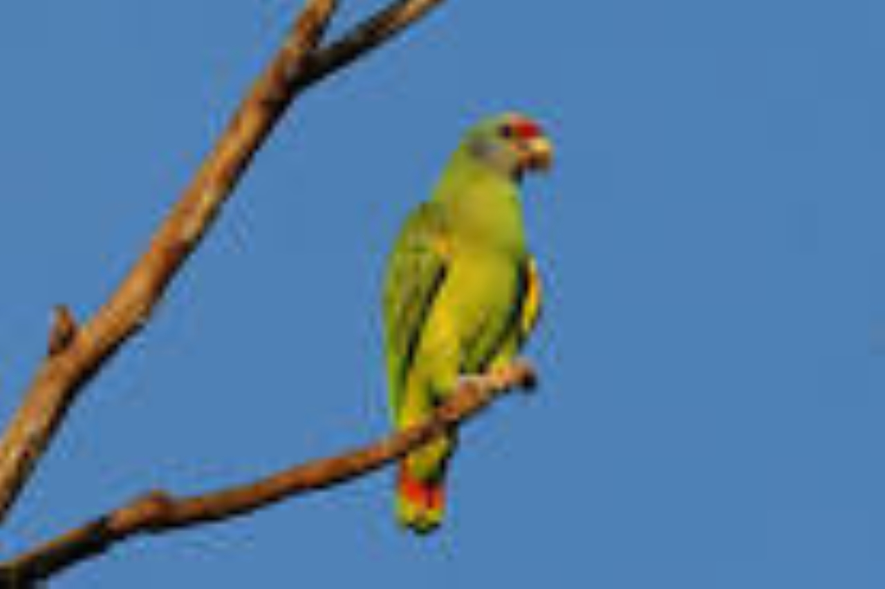

Descubra o fascinante Papagaio-De-Cara-Roxa
O Papagaio-De-Cara-Roxa é uma das aves mais coloridas e atraentes da natureza. Essa espécie é nativa da América do Sul, mais especificamente do Brasil e países adjacentes. É uma das poucas aves que possuem uma ampla variedade de cores em suas penas, incluindo o vermelho, o azul e o amarelo, dando-lhes um aspecto vibrante e vibrante.
Além de sua beleza, o Papagaio-De-Cara-Roxa também é conhecido por sua personalidade extrovertida e amigável. Eles são animais sociais e gostam de interagir com seus donos, aprendendo novos truques e imitando sons e vozes. Eles também são conhecidos por serem bons falantes, aprendendo palavras e frases com facilidade.
Cuidar de um Papagaio-De-Cara-Roxa é um compromisso sério, pois eles precisam de uma dieta equilibrada, ambiente saudável e muito estímulo para manter sua saúde e bem-estar. É importante fornecer a eles um ninho grande e confortável para dormir e um local seguro e espaçoso para voar e brincar. Além disso, é importante dedicar tempo para interagir com eles e treiná-los regularmente para mantê-los saudáveis e felizes.
Se você está considerando adotar um Papagaio-De-Cara-Roxa, é importante lembrar que eles são animais de longa vida e precisam de atenção e cuidado por muitos anos. No entanto, com amor e dedicação, eles podem se tornar animais de estimação leais e amigáveis que vão enriquecer sua vida.